Rich's digital garden
Forgotten and constructed landscapes
What started as a short walk turned into an unplanned dérive around old roads and country lanes, finding our way to a forgotten RAF airfield.
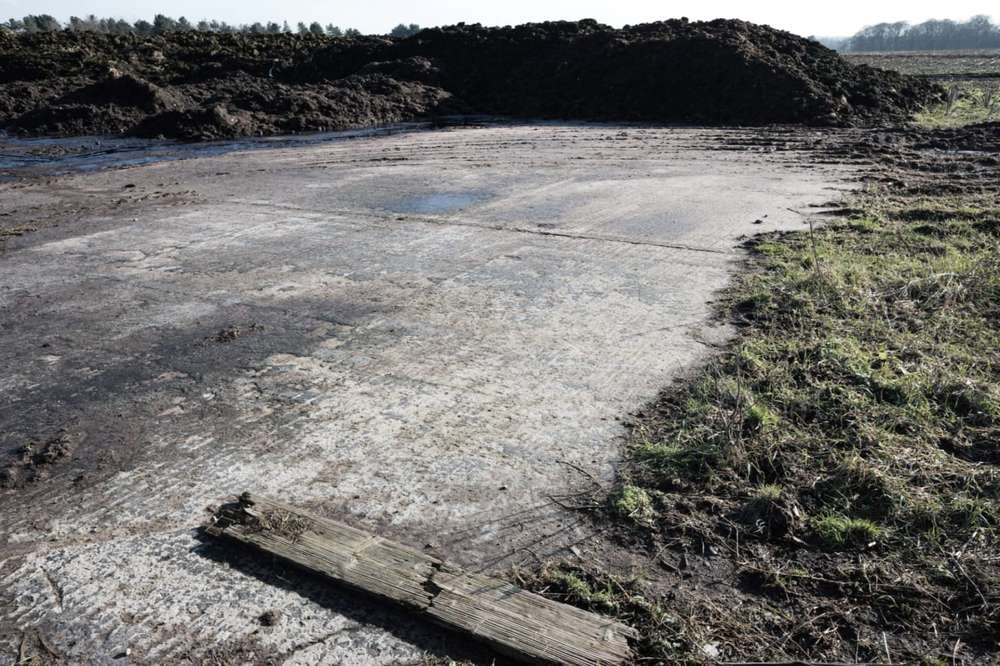We stopped at a crossroads and peered into the adjacent fields. A cow stared at a hedgerow opposite a pile of muck. A conventional rural sight with the distant sound of bleating sheep. I was actually standing on a runway.
{kind=link}
In 1943, this rural site was subject to development on a scale comparable to contemporary urban construction. The MOD requisitioned the land and built a three-runway RAF airfield. Operational until 1960, buildings were cleared and the land slowly reverted back to agriculture.
Topographical changes to the site in the building of the airfield.
 1900 OS map compared with 1968. Data from maps.nls.uk
1900 OS map compared with 1968. Data from maps.nls.uk
The airfield reverting back to agriculture today. The white squares are the remains of runways, while other parts convert to roads and paths.
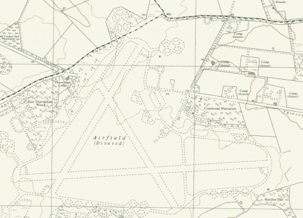1968 OS map compared to today. Data from maps.nls.uk
{kind=link}
Besides the history of the airfield, of which reliable sources are few and vague at best, the site is interesting because its remaining artefacts and arrangement of topographical elements lack context or acknowledgement of the past.
The coach road, which runs east to west through the site connecting to the A1, has an unusual V-shaped diversion to the south. Studying historic maps, I found that the road was closed to clear the way for a runway and service road. Walking the route in person, there are no obvious visible indications that this V section is the remains of a runway adjoined to the original road.
Fragments of runway remain within fields as patches of white concrete. Now used as farm storage, its home to piles of fertilizer, chicken coops and a moss-covered caravan hidden behind industrial agriculture equipment.
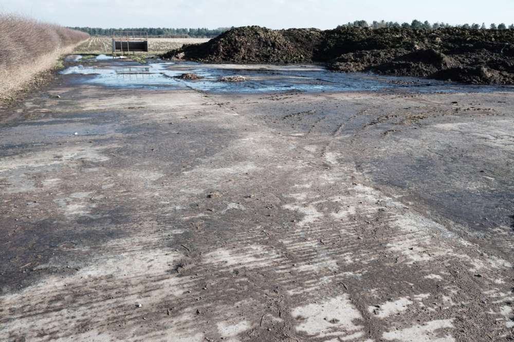Further research with a dive on duckduckgo produced an expired website mirrored on the internet archive with a brief history and photographs of the airfield. I have chosen some of the photographs to share.
{kind=link}
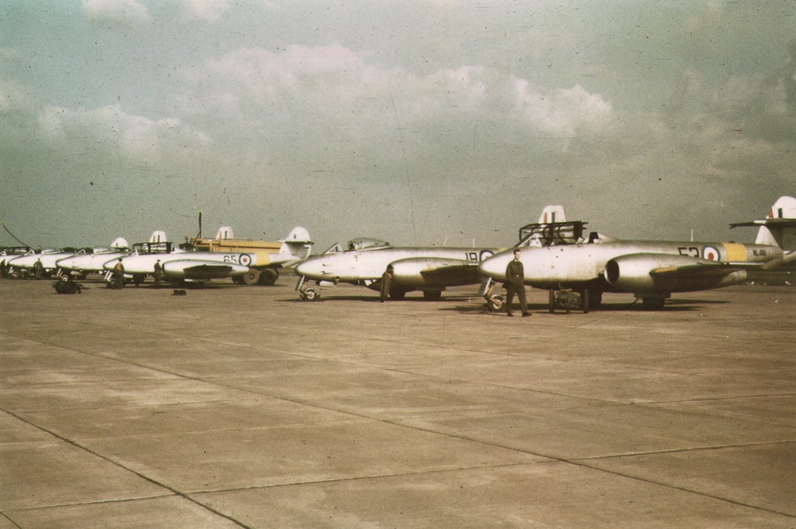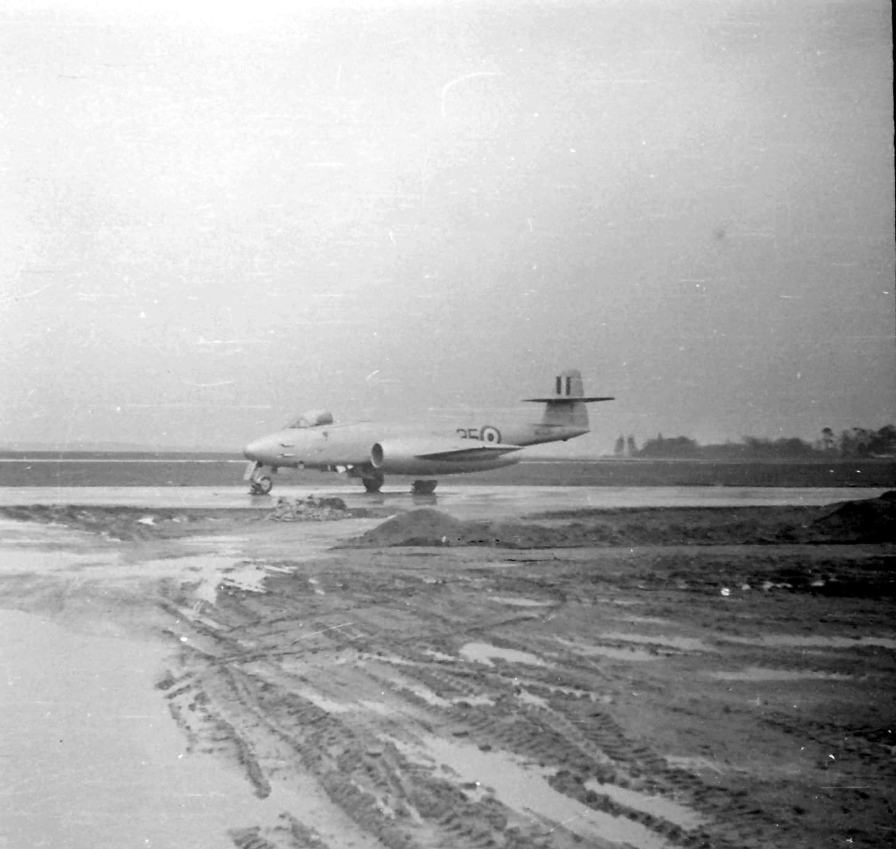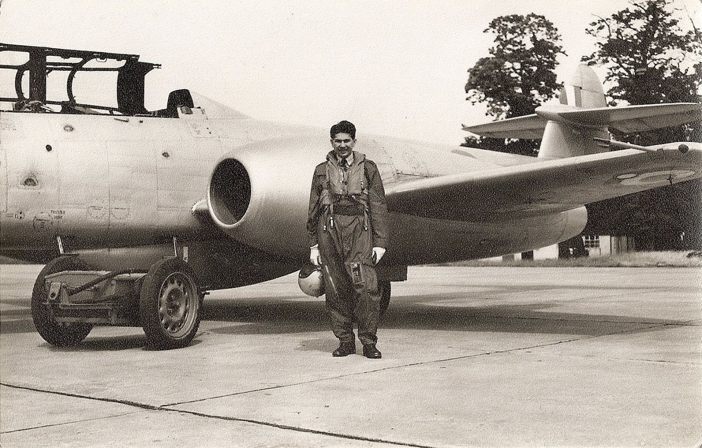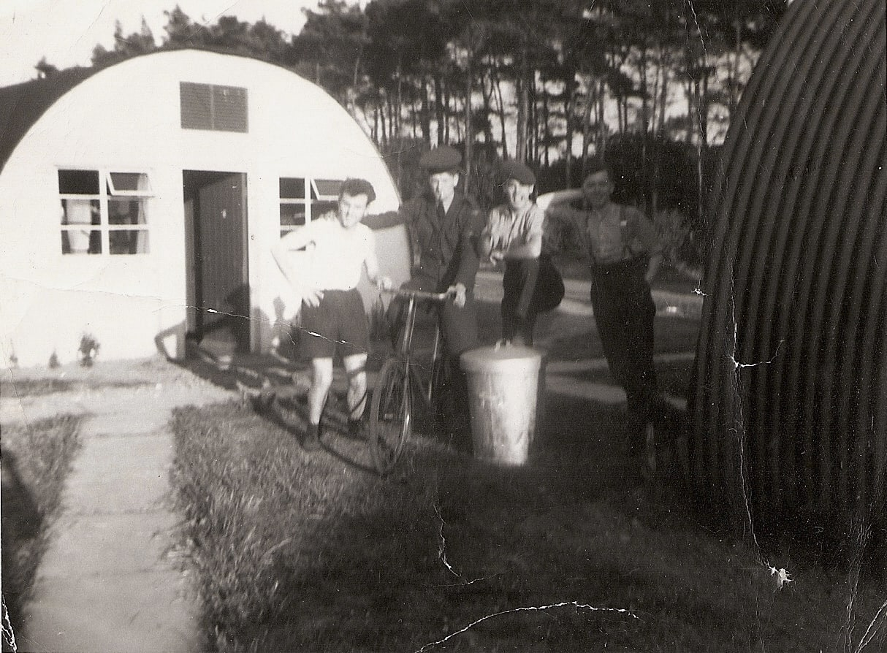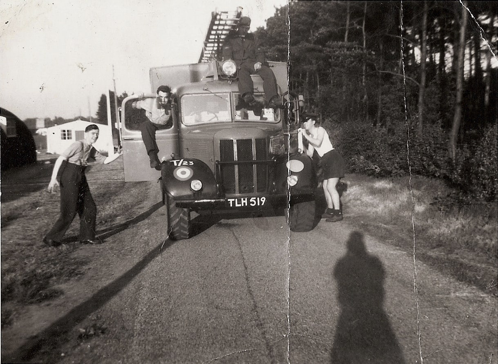It’s strange looking at these historic photographs. The tree lines and road, even the roadside sun-bleached grass, are familiar to the present-day site. However, this illusion of familiarity is limited to the photographs themselves. Observing the present-day landscape, the site evades its airfield past. Hard to imagine Gloster Meteor jets roaring down broken concrete and waterlogged fields.
{kind=link}
{kind=link}
{kind=link}
{kind=link}
I have purposefully chosen images that present the lost airfield landscape in both physical and social forms without caption or in-depth explanation, to look into the past.
If the purpose of using photographs in history is to ‘see’ the past, then it is nevertheless important to remember that the photograph is always already a mediated view, an interpretation whose meaning is potentially polysemic, thoroughly plural. This is the uncomfortable fact about any photograph or document in historical work; a photographic meaning is not fixed in history, it is the historian who does that: meaning is fixed by the discourse of history.(David Bate, Photography The Key Concepts).
Despite the bottom two photographs being informal snapshots of co-workers or friends, I interpret the photographs as specific historic artefacts to a forgotten landscape of jets, RAF personnel, fire crews, and corrugated barracks. Like Barthes looking at Kertész’s image of Polish soldiers, the photographs are “…nothing extraordinary, except this, which no realist painting would give me, that they were there…” (Camera lucida, page 82).
If historic discourse alters interpretation(s), I wonder how might people looking back at my work, specifically of this site, interpret the images. With the airfield absent from the landscape, they probably lack any interesting merit beyond banal amusement. The only impressive scene found above the site today is a glimpse of a buzzard.
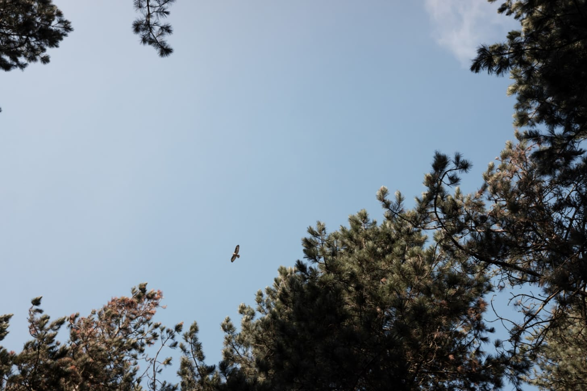### Informal spaces: the unofficial bike trail
{kind=link}
Visiting a plantation, we found users have been busy appropriating the space. As discussed previously in the first newsletter, there is an unofficial bike track in these woods. This informal bike track enclosed by discarded debris and pine needles has been redeveloped. Impressive sized logs have been dragged into place, mounds of earth have been moved, and dirt ramps built up. What looks like hours of work, I am doubtful it will keep. Either vandalism or modification by another user, the space will change.
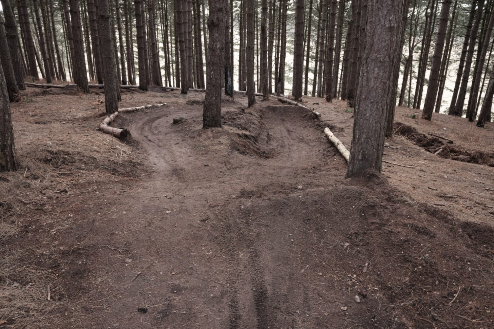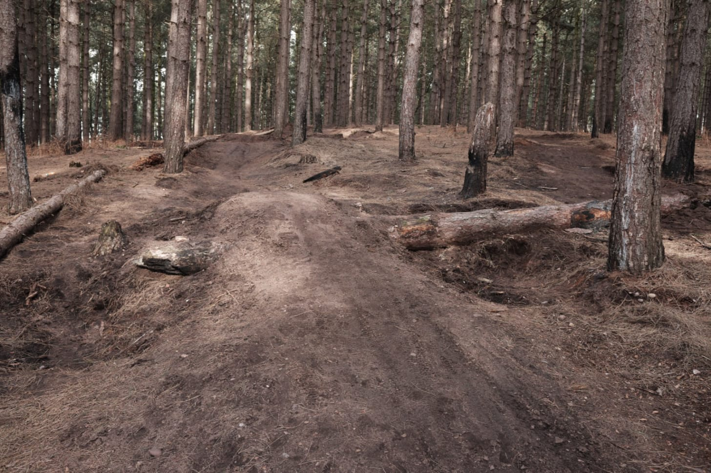### New sketchbook from a 2019 diary
{kind=link}
{kind=link}
Given a 2019 diary to recycle I started a new sketchbook. My last book was a concertina from hobby craft with the idea that I would hang it somewhere as a mock exhibition and be able to arrange images to create sequences. Lacking practicality or space, I have not got round to it yet.
This book is different as it comes used, it encourages me to be less neat. I can move images or cut pages without feeling guilty. Another difference from a conventional new sketchbook is that this book has a purpose as a diary. It practically sets the theme of time and events. Inside it has a compact one-page calendar for both 2019 and 2020. I added an extra year. Circled in some dates like the first lockdown. No doubt more dates will go in.
In the process of constructing a narrative, I tried arranging work printed as 6x4 prints, the kind that many print services offer for “free”, but I am enjoying using the whole spread with an inkjet photocopy.
{kind=link}
{kind=link}
{kind=link}
{kind=link}
{kind=link}
This article is from my newsletter. Consider subscribing, it's free and weekly.
Created
21/02/2021
Topics
Roadside Picnic
Landscape
Time
Memory